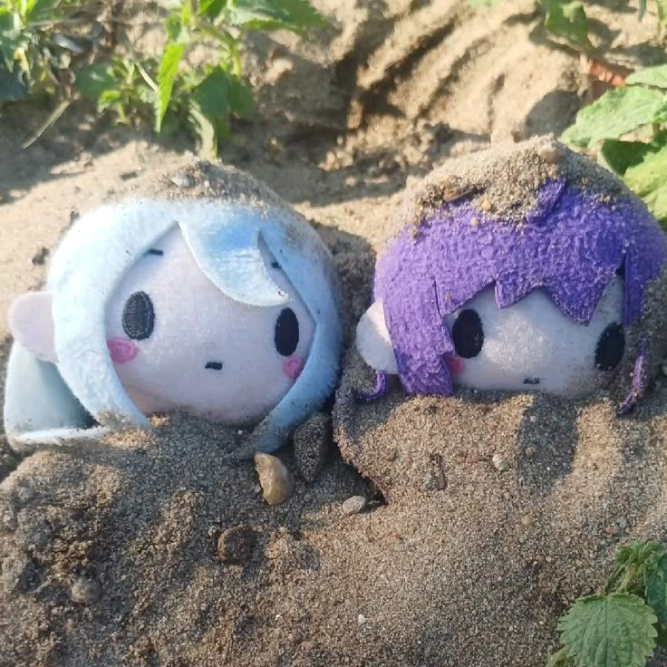
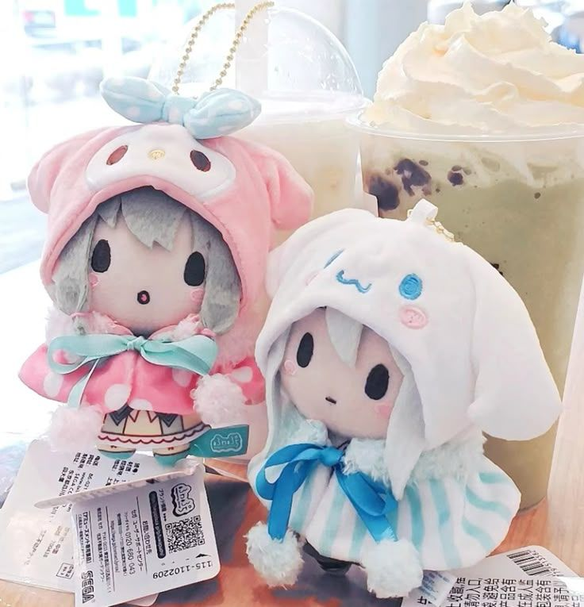
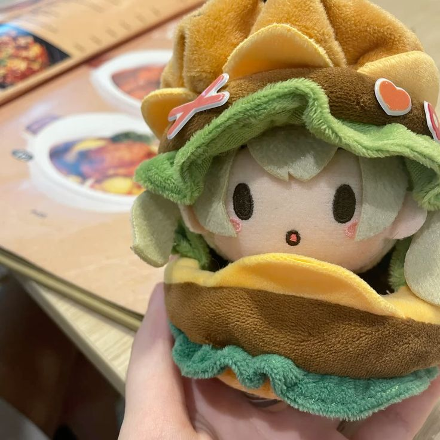
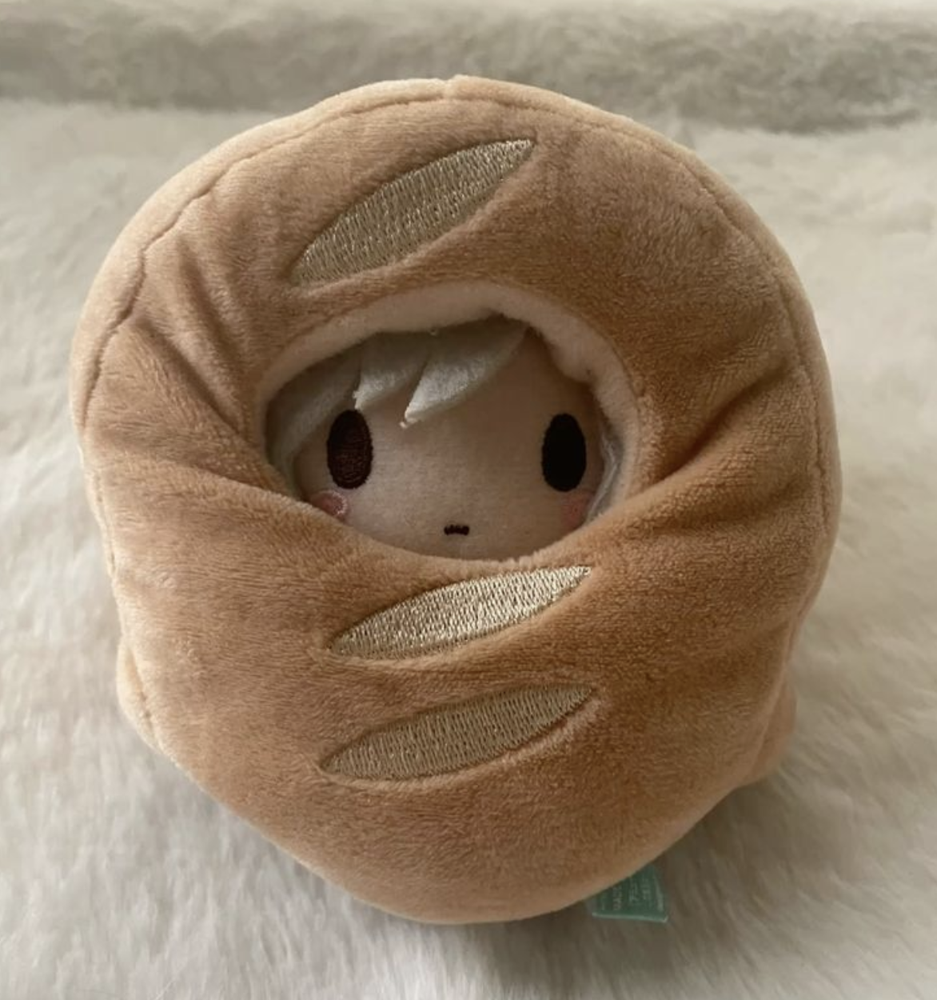

this is my little internet house. wipe your feet!
this is me (or a drawing of me, or a guy i found, who knows)
hello and welcome to my site!! i've tried out all those custom profile sites (carrd, rentry, strawpage, pronouns.cc, etc.) and none of those really stood out to me, so i decided to learn how to code and make a website instead! this whole place is a big ongoing scrapbook of stuff i like, stuff i make, and stuff i think about. it's mostly for me but if you're here too then hi!!! glad you found it! :3
i built this thing myself with html and css and a lot of trial and error, so if something looks broken.... it's probably on purpose. trust me... also i can make the text background green. that's pretty cool. hi im green
click around!!!




"aauauughghbmgnivmkg Hi guys"
anyway. thanks for stopping by!!! have a nice life or something... ummm... sorry. i'm not great at goodbyes. also check out my other pages!!! they're super cool trust me ^w^